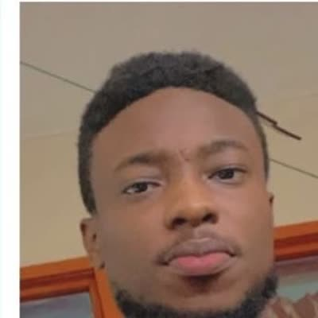

Tia
Road Traffic Accident
Tia's memory drives our road safety education and advocacy, and our support for accident survivors and their families.
Before RTC Foundation had a name, it had three friends — classmates on the road to becoming doctors, and the reason this foundation exists at all.
Rita, Tia, and Chichi were our classmates at KSMD, the KNUST School of Medicine and Dentistry, training together toward the same calling. During our clinical years, we lost each of them — Tia to a road traffic accident, Rita to cancer, and Chichi to a neurological illness. As a class, we made a decision: their deaths would not be the end of their story. We built RTC Foundation in their memory, dedicating our work to the very causes that took them from us, so that other families might be spared the same loss. They inspired this foundation, and even in their absence, their impact continues through everything we do.
Our three focus areas carry their names, in a sense — each one is a tribute in its own right.
Road Traffic Accident
Tia's memory drives our road safety education and advocacy, and our support for accident survivors and their families.
Cancer
Rita's memory drives our work in cancer screening, vaccination access, and treatment support for young people.

Neurological Illness
Chichi's memory drives our work to end stigma and build understanding around neurological disease.
Every screening we run, every road safety session we teach, every family we sit with through a diagnosis — it all traces back to them. Even in loss, Rita, Tia, and Chichi continue to change lives.